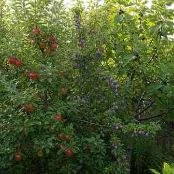

Rest. Breathe. Reconnect.
Wake up without an alarm. Drink tea with local herbs on the veranda. Walk through the forest. Watch the sunset. Look at the stars.
A piece of ancestral land is coming back to life.
IN DEVELOPMENTThis is not a resort. It is a piece of ancestral land being brought back to life as a small nature estate where people can reconnect with nature, themselves and a simpler way of living.
For generations, our ancestors cared for this land. They cultivated it, harvested its fruit, cared for animals and lived closely with the nature around them. Today, life looks very different. But the land is still here.

There is no schedule at Romanija. No right way to spend your time here.
Wake up without an alarm. Drink tea with local herbs on the veranda. Walk through the forest. Watch the sunset. Look at the stars.
Hike through Romanija. Mountain bike through the forest. Climb the Via Ferrata. Paddle a river. Venture further into the mountains.
Work in the garden. Pick fruit. Forage. Prepare a meal. Learn how food is grown, harvested and shared.
Future wooden cabins using natural and local materials, Romanija-authentic simplicity and a large window towards the landscape.
A food forest and garden providing seasonal ingredients for organic vegetarian meals, harvesting and traditional food making.
Hiking, gardening, foraging, cooking, mountain biking and stargazing.
Via Ferrata Romanija, Pale, Jahorina mountain, Fun Forest, Tara River, Sarajevo and Mostar.
Our ancestors were farmers, like many families who lived around Romanija. They worked the land, kept animals and produced most of what they needed themselves.
Vegetables came from the garden. Meat and dairy came from the animals. Fruit became jam and preserves. Bread was made at home. Cheese was made from their own milk.
What they produced beyond their own needs could be sold or exchanged for the few things they could not make themselves. Nothing was wasted. Wood was prepared for winter, food was preserved, and neighbours helped each other when there was more work than one family could manage alone.
The land can still grow food, provide water, give shelter and give us space to breathe.
We feel a responsibility to care for this land and the nature around it. Our ancestors worked hard to look after it. We have the opportunity to continue that care — not by recreating their lives, but by carrying forward something fundamental about the way they lived.
Perhaps caring for nature is also a way of caring for ourselves. An essential attitude that modern life can make us forget.
Rolling valleys, forested hills, open meadows and rural life. The future estate is designed to sit quietly within this landscape rather than dominate it.
We want Romanija Nature Estate to grow without losing what makes the land special.
Grow food where the land allows it, and use it seasonally.
Use water, soil, forest and natural resources thoughtfully.
Use renewable energy and efficient systems wherever possible.
Keep development small and let the landscape remain the main character.
Share what the land provides and invite others to participate.
The cabins aren't here yet. The food forest needs to be regrown. The gardens are evolving. The vision is slowly becoming reality.
Follow the development as the land is restored, the food forest is regrown and the first cabins take shape.
We are here to care for it.
And we hope to share it with you.
Reconnect with nature. Experience Romanija.